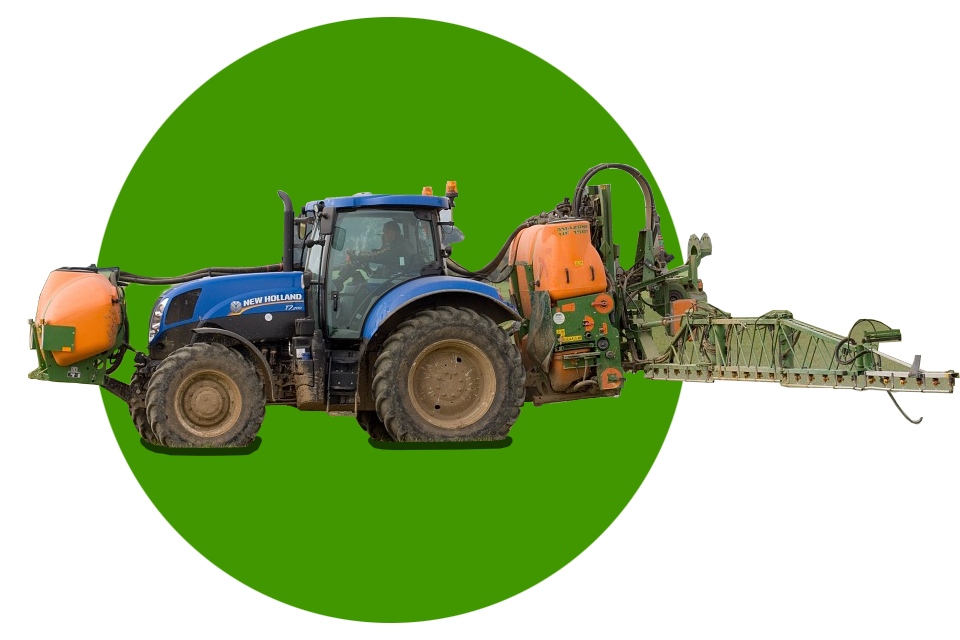

В света вече над 40% от употребяваните азотни торове са течни.
Течните азотни торове с най-широко приложение са: АНХИДРИРАН
АМОНЯК(безводен амоняк)–82,25%N а.в.;АМОНЯЧНА ВОДА - 21% N а.в.
| Съдържание на N в % | 28% | 30% | 32% |
|---|---|---|---|
| Съдържание на AN в % като тегло | 40.1 | 42.2 | 44.3 |
| Съдържание на UREA в % като тегло | 30.0 | 32.7 | 35.4 |
| Съдържание на вода в % като тегло | 29.9 | 25.1 | 20.3 |
| Специфично тегло при 16 С | 1.283 | 1.303 | 1.320 |
| Кристализация при външна температура в С | -18 | -10 | -2 |
Течният азотен тор /UAN/ съдържа не по-малко от 32% активно вещество под формата на карбамид / амиден азот/ и амониева селитра /амониев-нитратен азот/. В общото азотно съдържание на UAN амидният азот е около 50%, а амониевият и нитратният азот е по 25%. UAN не съдържа свободен амоняк; не е пожароопасен, взривоопасен, корозионен или токсичен за хората и животните
УРЕЯ АМОНИЕВ НИТРАТ (УАН) в България има много голямо бъдеще, заради ниската си цена и минимални разходи за приложение. Относителното му тегло е 1,32 , т.е. 1,5 пъти повече N в единица обем спрямо амониевата селитра. Агрохимичните и физични свойства на УАН го правят по-добър от твърдите торове по отношение на усвояемост и приложение. Няма организационна и технологична специфика при работа с този течен тор. УАН е подходящ както за предсеитбено, така и за вегетационно приложение. Ефективността при прилагане на УАН върху почвата и растенията е с 10% по-висока спрямо сухите торове, тъй като не се отнася от вятъра, не се промива от водата ( нитратният N е само 25%). Постига съвършената равномерност на разпределение в площите, което е от огромно значение за добива и качеството. Подхранване на полските култури с УАН в райони с тенденции на трайни засушавания е подходящо – валежите не са толкова важен фактор при прилагането на течните торове. Съгласно таблица за смесимост УАН успешно може да се прилага с някои хербициди или микро торове. Не съществуват никакви рискове за нормалното поникване и развитие на растенията! Преросявания, превалявания по време или след приложение на УАН са нежелателни единствено при комбинация с вегетационни хербициди. При транспортиране и съхранение на УАН могат да се използват всички видове цистерни, които са изправни, като е желателно за по-голяма сигурност да се монтират сдвоени кранове. Торенето с течни торове се извършва с обичайните за земеделската практика машини и транспортни средства – пръскачки и цистерни, включително самолети и вертолети. УАН не е пожароопасен, взривоопасен, корозионен. Гарантира безопасна употреба и не е токсичен за хората и животните.
В съответствие с горепосоченото, азотното торене на различните полски култури с "Течен азотен тор 32", трябва да се съобразява с особеностите на тора, почвеното плодородие и технологиите за отглеждане. Практически "Течен азотен тор 32" е подходящ за основно и предсеитбено почвено торене, и за подхранване на полските култури, отглеждани на почти всички почвени типове в страната - типични, излужени и оподзолени черноземи, смолници, канелени, кафяви и сиви горски, алувиални и делувиални почви. При внасяне на "Течен азотен тор 32" върху много суха почва или при температура на въздуха по-висока от 15-18 °С е препоръчително торът да се инкорпорира чрез подходяща обработка на почвата, за да се избегнат макар и малките загуби на азот. На почва с добра и средна влагозапасеност не е е необходимо инкорпориране, поради това, че внесеният течен тор попива в почвените частици и загубите на азот се избягват. Не е необходимо инкорпориране, ако непосредствено след внасянето на тора площа се полее. Проведените полски торови опити, както и разработените технологии за азотно торене позволяват диференциране на нормите за торене с Течен азотен Тор. Тези норми са посочени в приложение 3. Следва обаче да се има предвид, че оптималните норми се определят след извършен почвен анализ

Отношението на смесване (обемна част) вода : Течен азотен тор трябва да бъде най-малко 3 :1, по-добре 4 : 1
От голямо значение за предотвратяване възможното увреждане на засетите земеделски култури, както и избягване на разяждането на листата при използването на Течен азотен тор е видът на използваните в пръскачките за торене дюзи, които определят големината на капката.
Направените опити показват, че удачни като съотношение цена и ефективно действие са дюзите на немската компания “LECHLER” и по специално изброените по-долу видове:
- противоотклонителни дюзи AD 120о ; 1,5 – 4,0 bar
- аеро-инжекционни дюзи ID 3,0 – 4,0 bar
- дюзи с 5 отвора FL: 1,5 – 4,0 bar
- влачещи се маркучи / влачещи се тръби: 1,0 – 7,0 bar
Противоотклонителните дюзи са особено подходящи за разпръскване на Течен азотен тор, защото те и в по-висок обхват на налягането до 4 bar работят с голяма или средна капка.
Противоотклоните дюзи AD имат ъгъл на пръскане 120о и са изработени от РОМ (Хостаформ) керамика. С тях се разпръскват препарати за растителна защита и регулатори на растежа /фунгициди, хербициди, инсектициди, акарициди/. Особено подходящи за разпръскване на течни торове – UAN или амониево-нитратни разтвори.
Аеро-инжекционните дюзи ID имат имат ъгъл на пръскане 120о и са изработени от РОМ (Хостаформ) керамика. Подходящи са разпръскване на препарати за растителна защита и течни торове. Те произвеждат голями капки чрез образуване на мехурчета. Затова те имат особено малко отклонение. При AD и ID-дюзи течните торове могат да бъдат използвани самостоятелно или в комбинация със средствата за растителна защита.
В Приложение 13 са дадени някои параметри при употребата на противоотклонителните AD и аеро-инжекционните ID дюзи.
Физическа съвместимост на "Течен азотен тор 32" със средства за растителна защита.Течен азотен тор е съвместим с препаратите произведени на активни бази 2,4-Д, Метсулфурон, Флорасулам, Дикамба, Йодосулфурон+ амидосулфурон, Клетодим, Линурон, Ацетохлор, Ацетохлор В резултат от проведените изследвания е установена съвместимостта на Течен Азотен Тор с хербицидите 2.4 Д амидна сол, Стреч 60 ВП, Дерби 75СК, Линтур 70ВГи Секатор (използвани при пшеница и ечемик); Линорекс 50СК, Линурон 50ВП Селект 240ЕК, Афалон 45 СК, Гардиан и Трофи(използвани при пролетните окопни култури). При добавяне на количества Течен Азотен Тор, съответстващи на до 6 kg/dka а.в. (14.2 l/dka) при пшеницата и ечемика; до 5.0 kg/dka (11.8 l/dka) при кориандъра; до 5.0 kg/dka ( 17.8 l/dka) при царевицата и слънчогледа, към приготвен работен разтвор от хербицида в продължение на 24 часа не се наблюдават промени в температурата, киселинността и цвета на разтвора, отделяне на газ, поява на утайка. Единствено при смесване на Линурекс + Течен азотен тор и Афалон + Течен азотен тор се получава утайка след 4-5 часа. Въпреки това ефектът от хербицидите е много добър..
Тънките восъчни слоеве, които често се образуват след продължителни дъждовни периоди, предизвикват разяждане на листната маса. Променливите студови периоди, горещината, слънцето, както и остатъците от роса имат неблагоприятно въздействие. Чистият Течен тор може да се разпръсква без проблеми и по време на дъжд, но при комбинация с препарати за растителна защита това е недопустимо.